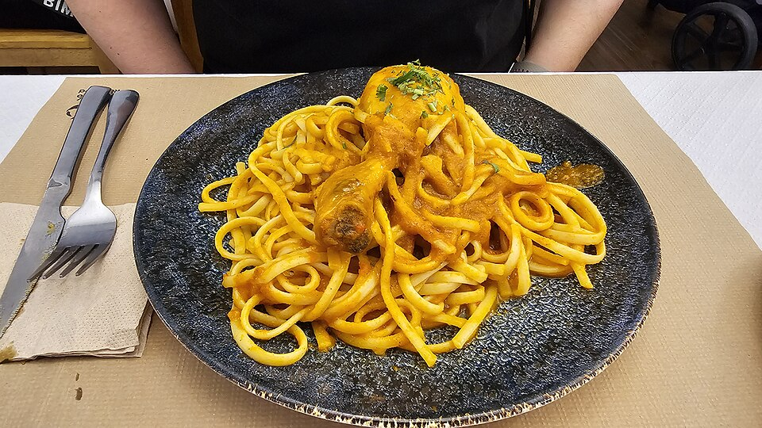

tallarines rojos

Description
Tallarines rojos (or Red noodles with chicken) is a popular main dish in Peru.
This dish is a fusion of Peruvian and Italian cuisine, as it originates from spaghetti alla bolognese.
Ingredients
- 6 Ripe tomatoes
- 1/2 Chicken
- Salt to your liking
- Pepper to your liking
- 1 Medium carrot
- 5 tablespoons of oil
- 1 Red Onion
- 4 cloves of Finely chopped garlic
- Mushrooms with bay leaf to your liking
- 2 cups of water or chicken broth
- 300 grams of Spaghetti or Linguine
- Parslet leaf for garnish to your liking
Steps
-
Remember to select ripe tomatoes. On a cutting board, cut off the top and bottom of the tomatoes,
and remove the skin and seeds. Don't throw away the tomato skins and seeds; we'll use them later.
-
We cut the tomato into strips, then into cubes and set the tomato aside.
-
Place half a chicken on a cutting board, add salt and pepper, and mix well. Grate a medium carrot and set aside.
-
In a pan over medium heat, place a tablespoon of oil and tomato peels, brown for 3 minutes, then cover with water and cook over low heat for 15 minutes.
-
In a pot over medium heat, add 3-4 tablespoons of oil and sear the chicken pieces skin-side down for 2 minutes. After that time,
turn them over and sear for another 2 minutes, then remove the chicken.
-
In the same pot where the chicken was browned, add 1 diced red onion, 4 cloves of garlic, a pinch of salt and sauté for 15 minutes,
stirring constantly with a spoon. After that time, add the tomatoes, grated carrot, mushrooms with bay leaf and sauté for another 10 minutes.
-
Place the tomato hearts on a chopping board and transfer them to a colander. Using a spoon, extract the tomato juice and
add it along with the strained tomato peel broth to the seasoning. Sauté for another 10 minutes.
-
After 10 minutes, add the chicken pieces back in and add 2 cups of water or chicken broth, cover and cook over low heat for 25 minutes, then remove the chicken pieces.
-
In a pot of boiling, salted water, add the spaghetti and cook according to the time indicated on the spaghetti package.
-
We drain the pasta and add it to the sauce, then mix the spaghetti with the sauce.
-
Serve the red noodles on a plate with the chicken pieces and, for those with a sweet tooth, with huancaina potatoes.
Main page